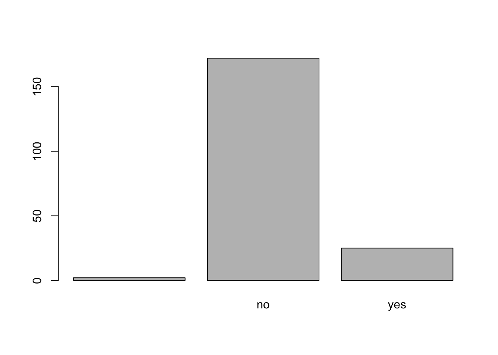
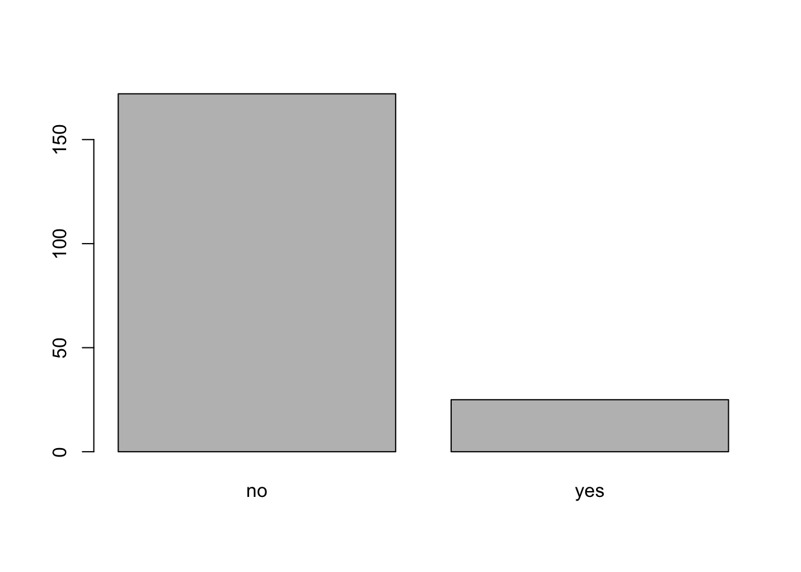
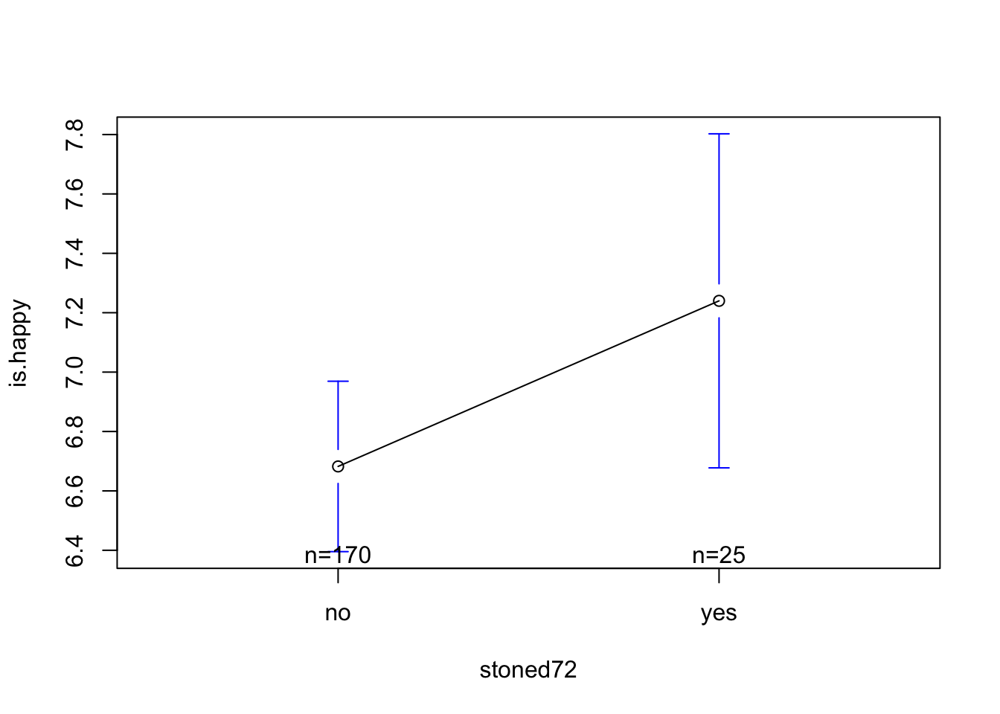
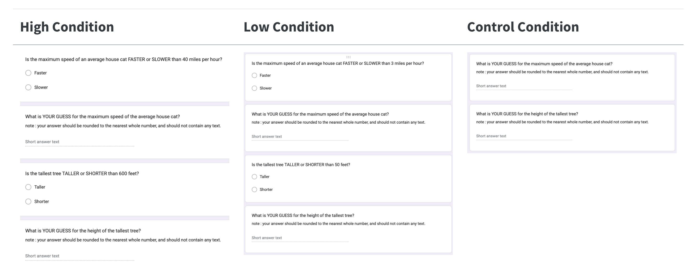

d <- read.csv("~/Dropbox/!WHY STATS/Class Datasets/101 - Class Datasets - FA25/mini_cal_data.csv", stringsAsFactors = T)Lecture 7 - Categorical Models
Check-In : A Quick Study
- No talking, no looking up answers!
- Will use data in lecture :)
Announcements & Reminders :
- THE END IS NEAR. Five lectures left. Actually this feels like a lot?
- Lab 7 : Start Analyzing Your Final Project Data!
- Export data as a .csv
- Data cleaning :
- get rid of “Extra” columns & rows.
- rename variables –> codebook
- convert likert scales (“1 - Strongly Disagree”) to numbers (1)
- Descriptive Statistics.
- DO THIS IN SECTION WHERE YOU CAN GET HELP!!!
RECAP : \(R^2\) In Real-Life


- DISCUSS : what do these linear models tell us about the relationship between GPA, SAT (IVs) and freshman grades (DV)?
- freshman grades ~ HS GPA + error
- slope = .39
- R^2 = .16
- freshman grades ~ SAT + error
- slope = .46
- R^2 = .21
- these are relatively large effects in psychology. ONE THING predicts ANOTHER 15-20%!!!!
- SAT is a “BETTER” predictor of UC Freshman GPA (higher slope; higher R^2 value.)
- WHY SHOULD WE NOT TRUST THIS / LET THIS BE THE END????
- Where are the data from??? [ALL UC students]
- SAT may not be the best measure of knowledge.
- EXAMPLE : could focus on quality of projects; work experience; life experience (qualitative essay / “are you happy”)
- THE POINT : SAT can also be a reflection of how much MONEY you have.
- EXAMPLES : money could help you buy sat tutors, private proctoring to help you cheat, pay to take it more than once, just livin’ off that allowance your parents give you and time to study all summer.
- WHO CARES :
- people who may not have the means to pay to do well on the SAT migth be denied entry into an institution that, in theory, is meant to help them increase their ability to succeed.
- if you have money to do well on the SAT, then you also have the same resources to succeed in college (live on campus so not commuting / working multiple jobs; pay for a tutor; see your family when you want to)
- freshman grades ~ HS GPA + error
0———————.3————–.5————————————1.00
(average!!!)
When the IV is Categorical…
We Load the Data
We Graph our Variables.
hist(d$is.happy)
plot(d$stoned72) # an empty level!
levels(d$stoned72)[1] <- NA # careful, only do this one time.
plot(d$stoned72) # an empty level is GONE.
We Define and Graph Our Linear Model.
The Model Coefficients : An Intercept and Slope
mod <- lm(is.happy ~ stoned72, data = d)
coef(mod)(Intercept) stoned72yes
6.6823529 0.5576471 The Graph Will Help Our Interpretation.
library(gplots)
Attaching package: 'gplots'The following object is masked from 'package:stats':
lowesspar(mfrow = c(1,2))
plotmeans(is.happy ~ stoned72, data = d)
plotmeans(is.happy ~ stoned72, data = d, ylim = c(0,10))Warning in arrows(x, li, x, pmax(y - gap, li), col = barcol, lwd = lwd, :
zero-length arrow is of indeterminate angle and so skippedWarning in arrows(x, ui, x, pmin(y + gap, ui), col = barcol, lwd = lwd, :
zero-length arrow is of indeterminate angle and so skipped
coef(mod)(Intercept) stoned72yes
6.6823529 0.5576471 summary(mod)$r.squared[1] 0.01029735DISCUSS : what do we see on this graph? What makes sense / is confusing?????
- people who were stoned are higher in happiness (b = .557)
- there are more nos than yesses (n = sample size for each group; and sampling error bars give a hint.)
- the graph magnifies the difference….good to give it some context (if not a z-score, then the full range of the scale!)
- OTHER QUSTIONS WE MIGHT HAVE :
- what are those tie-figher looking bars (b-wing???) [sampling error]
- are there differneces in people who were honest about weed usage and those who were not?
OUR EQUATION : happiness = 6.68 + .55 * stoned72YES
6.6823529 0.5576471The IV has been DUMMY CODED.
- when stoned72 = 0 = “No” (Or not “Yes”)
- when stoned72 = 1 = “Yes”
The Intercept is : The Predicted Value of Y when all X-Values are Zero.
- this means : happiness for someone who’s X value is NOT stoned
The Slope is : How our Predicted Value of Y changes when X changes by one.
- this means : if someone IS stoned, we adjust that prediction by .55 points up.
We Interpret Our Linear Model.
- Stat Stuff : What are the important numbers?
- What is the relationship?
- people who used weed were more happy (b = .55) than those who ddi not.
- How strong is this relationship?
- not very strong! R^2 = .01 = smoking weed (or not) explains 1% of variation in people’s happiness.
- What is the relationship?
- Brain Stuff : What’s the point?
- Why does this relationship in the data exist?
- CAUSAL :
- weed is a drug and that drug, like most drugs, makes people feel good (at least in the short term) / feeling creative, especially when it’s not criminalizd so you don’t hae to worry about that sound you just heard at the door, omg is someone out there….not gonna look whoa what time is it…..
- REVERSE CAUSATION : people who are higher in happiness are more likely to say they use wed?
- THIRD VARIABLE :
- people are using weed in social situations, and it’s the “hanging out with friends while not stressing about class” part of the experience that is relevant to happiness, and not the drug.
- maybe it’s about pain management
- when people are thinking about using the drug, it’s activating positive memories of relaxing…but not really about the drug itself.
- CHANCE.
- CAUSAL :
- What other questions might we ask?
- Who cares about this relationship? (How could we use this knowledge)?
- Why does this relationship in the data exist?
BREAK TIME : MEET BACK IN THIRTEEN MINUTES!!!!!
Work Time.
Define another linear model to predict a numeric DV from a categorical IV (with 2 levels.)
- Prof Example :
- Student Example :
BREAK TIME.
When there are 3 (or more levels…)
- Still just a linear model!
Anchoring Study : Example

Question : Will the number that people see BEFORE making their own rating influence their decision?
Theory :
- OPTION A: People who see a HIGHER number before making their own rating will make a HIGHER number than people who see the LOWER number.
- OPTION B : People who see a LOWER number before making their own rating will make a HIGHER number than people who see the HIGHER number.
- OPTION C : There will be NO DIFFERENCES between the groups.
Linear Models : DV ~ IV
Data : the “anchor_SP25.csv” dataset
- Load the data and check to make sure the data loaded correctly.
- Graph the variables; remove outliers and / or empty levels.
Results :
- Define your Linear Models
- Interpret Your Results
Discuss :
- Why do we observe this pattern?
- How could we use this knowledge in real-life?
- What other questions do you have? What else would you want to learn about?